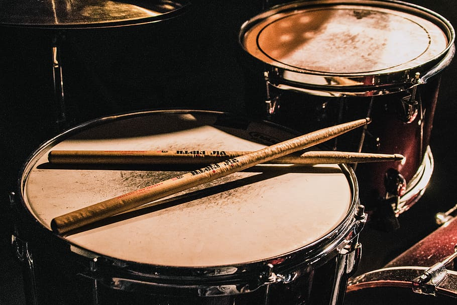

Música por músicos
Home
Inicio
Boletín
Final
Cuerda
Percusión
Viento
Los instrumentos de percusión son la familia de instrumentos más antigua que existe. Basicamente, un instrumento de percusión es aquel que produce sonido al ser golpeado o afitado (no abarca los instrumentos de
cuerda percutida
)
Los instrumentos de percusión, en cambio, a pesar de funcionar de una manera similar a los instrumentos de cuerda, se tocan de manera diferente. Las cuerdas, en este caso, son "pellizcadas" por los dedos para hacerlas vibrar y así producir música.
Según su afinación:
De altura definida (o afinados)
De altura indefinida (o no afinados)
Según el sistema que genera el sonido:
Membráfonos
Idiófonos
En las orquestas, en cambio, se usa la siguiente distinción:
De parche
De láminas
"Pequeña" percusión
En la foto se muestra una marimba, instrumento de afinación en el que se pueden tocar melodías, ya que es politonal.
En el caso de la batería, aunque tecnicamente se puede hacer (varios baterías son conocidos por ello) no sé pueden tocar melodías. A la hora de tocarse, se suele hacer con otros instrumentos musicales, debido a que su utilidad es rítmica.
El navegador no soporta el formato de audio.
